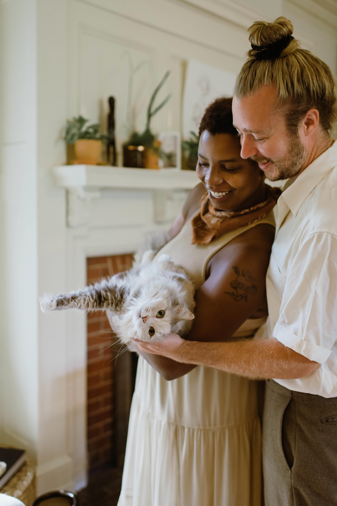

Brighter Future Cat Rescue |
We promise our rescued cats and kittens will receive the required medical treatment needed before they are re-homed (this includes all three kitten vaccinations, they are desexed and also microchipped). We will also ensure they are up to date with parasite protection and are treated for any other illnesses they may have contracted prior to being rescued.
Brighter Future Cat Rescue is a Western Sydney based rescue organisation run by a dedicated family and amazing feline loving foster carers who always put the health and well-being of the rescued cats first.
Our aim is to rescue, rehabilitate and eventually re-home cats and kittens to a permanent indoor home or alternatively ones with enclosures. This would not only provide a safe and secure loving environment for the cats and kittens but would also minimise the risk of them returning to the streets trying to survive the ever present dangers that come with cats being outside.
Each cat is provided with a loving foster home where they are socialised and cared for in an environment that we hope mimics their new forever home. During this time, they would receive any vet treatment they require before they are released to their new family.
Foster carers open their homes and hearts to care for kittens and cats that are in need of someone to care for them until they can find their forever homes. They are an essential part of our rescue that enables us to maximise the number of cats we can help each year. If you are interested in fostering with BFCR, please enquire through e-mail or send through a private message.


TestimonialsAnthony
We adopted “patch” and we could not be happier, he is such a beautiful cat and we feel so proud that we could help out. Facebook Krys
Such caring and selfless people who do so much for these beautiful kitties. Facebook SammyWe love both the cats we got from there. the foster carers do an amazing job of socialising them. Facebook |
We don't want to just talk about ourselves all the time! Our Facebook group is full of friendly faces who all have a love for our furry feline friends. We'd love for you to visit our blog, get in touch or check out our great community on Facebook.